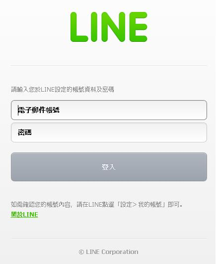
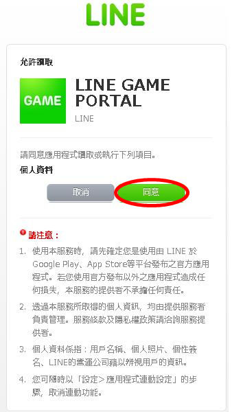
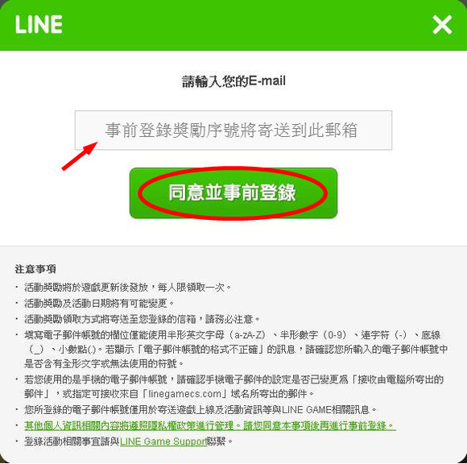
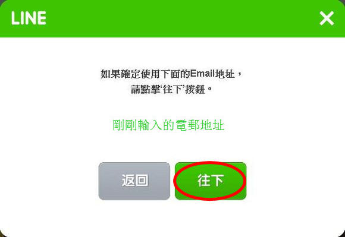

「LINE 秘寶尋航」/ LINE ONE PIECE Treasure Cruise
事前登錄教學
<< 返回 常見問題
在開始前，請準備：
一個 LINE 賬號
一個電郵地址（可以與 LINE 賬號相同）
進行事前登錄
1. 訪問事前登錄活動頁面
https://game.line.me/pr/optctw/zh_TW
2. 點擊「前往偉大航道」圖像
3. 登入 LINE

4. 允許應用存取資料

5. 輸入電郵地址
電郵地址可以與 LINE 賬號所用地址相同，用於寄送事前登錄獎勵序號。為確保可順利收到序號，可將「linegamecs.com」加入白名單。

6. 確認電郵地址

7. 完成登錄
事前登錄獎勵
100,000 貝里（遊戲貨幣）
三星喬巴（角色）
進化素材（未指定）
PV / 事前登錄宣傳影片
28秒的人生...
「LINE 秘寶尋航」是什麼？
「LINE 秘寶尋航」是日本 BANDAI NAMCO（萬代南夢宮）開發的手機遊戲「ONE PIECE トレジャークルーズ」由 LINE 在台灣發佈的中文版本。遊戲是以日本漫畫作品《ONE PIECE》（海賊王、航海王）為背景的 RPG（角色扮演遊戲）。
事前登錄
/ 官方網站：
https://game.line.me/pr/optctw/
遊戲非官方Facebook專頁：
https://www.facebook.com/pages/航海王-秘寶尋航-LINE-Treasure-Cruise/1658973350993032
屬於玩家們的空間 -
GAWiki
分支